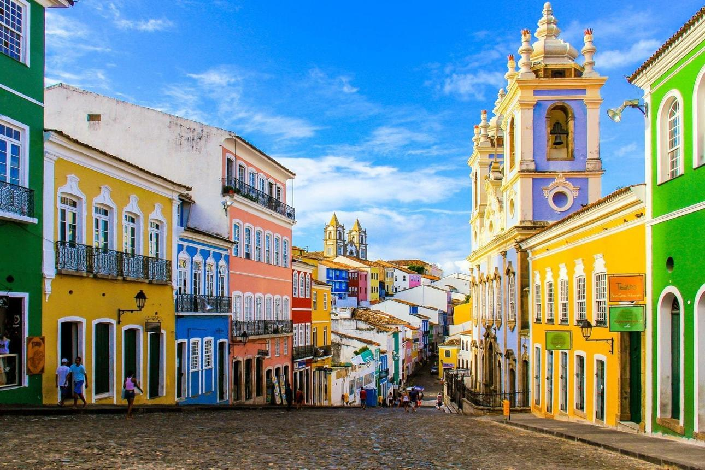

Itinerário
| Data | Destino | Horário informado |
|---|---|---|
| 12/12 | Santos — embarque | 15h30 / saída 17h |
| 13/12 | Búzios | 09h–19h |
| 14/12 | Navegação | — |
| 15/12 | Salvador | 08h–17h |
| 16/12 | Maceió | 09h–17h |
| 17–18/12 | Navegação | — |
| 19/12 | Santos — desembarque | Chegada prevista 06h |

Búzios • 13/12
Orla Bardot, centro e praias próximas.

Salvador • 15/12
Mercado Modelo, Elevador Lacerda e Pelourinho.

Maceió • 16/12
Pajuçara, Marco dos Corais e Ponta Verde.
Búzios — centro e praias
Imagem de Búzios: fotografia do guia de referência enviado.
Explore Búzios
Gratuitos
- Rua das Pedras — comércio e centro turístico.
- Orla Bardot — caminhada e fotos.
- Praia dos Ossos — cenário tradicional.
- Praia da Azeda e Azedinha — acesso a pé por escadaria.
Opcionais pagos
- Escuna: estimativa R$ 80–150 por pessoa.
- Táxi aquático: estimativa R$ 20–40 por trecho.
- Quiosques e cadeiras: confirmar preço no local.
Horários sugeridos
| 09h–09h45 | Desembarque por tender e ida ao centro. |
| 09h45–11h15 | Rua das Pedras e Orla Bardot. |
| 11h15–12h30 | Praia dos Ossos e Azeda/Azedinha. |
| 12h30–13h30 | Almoço no centro. |
| 13h30–15h | João Fernandes, se transporte e tempo permitirem. |
| 15h em diante | Retorno ao tender com ampla margem. |
Comidas típicas
Peixe grelhado, camarão, lula, casquinha de siri e frutos do mar. Almoce no centro para reduzir deslocamentos.
Salvador — centro histórico
Imagem de Salvador: fotografia do guia de referência enviado.
Explore Salvador
Gratuitos / baixo custo
- Mercado Modelo — entrada livre; compras pagas.
- Elevador Lacerda — confira tarifa e funcionamento.
- Pelourinho — ruas e largos históricos.
- Terreiro de Jesus e entorno da Catedral.
Opcionais pagos
- Igreja e Convento de São Francisco — confirme ingresso e horário.
- Farol da Barra — deslocamento maior; só inclua se houver tempo para voltar.
Horários sugeridos
| 08h–08h45 | Desembarque. |
| 08h45–09h30 | Mercado Modelo. |
| 09h30–10h | Elevador Lacerda e vista da baía. |
| 10h–11h45 | Terreiro de Jesus e Pelourinho. |
| 11h45–13h | Almoço típico. |
| 13h–14h30 | Centro histórico e compras. |
| 14h30–15h30 | Retorno ao terminal. |
O que comer
Acarajé, abará, moqueca baiana, vatapá, caruru e cocada. Pergunte sobre dendê e pimenta.
Maceió — Pajuçara e Ponta Verde
Imagem de Maceió: vista aérea do Marco dos Corais e da orla, conforme o guia de referência enviado.
Explore Maceió
Gratuitos / baixo custo
- Praia de Pajuçara e orla.
- Feirinha de artesanato.
- Marco dos Corais.
- Letreiro Eu Amo Maceió.
- Orla de Ponta Verde.
Opcionais pagos
- Jangada às piscinas naturais — depende da maré e do tempo disponível.
- Praia do Francês — deslocamento extra, não é prioridade.
- Evite Gunga e Maragogi nesta escala curta.
Horários sugeridos
| 09h–09h45 | Desembarque e transporte até Pajuçara. |
| 09h45–10h30 | Praia de Pajuçara. |
| 10h30–11h15 | Feirinha de artesanato. |
| 11h15–12h | Orla e fotos. |
| 12h–13h15 | Almoço regional. |
| 13h15–14h30 | Marco dos Corais e Ponta Verde. |
| 14h30–15h | Letreiro e retorno ao transporte. |
| 15h–15h45 | Volta ao porto, considerando trânsito. |
Comidas típicas
Chiclete de camarão, sururu, peixada alagoana, carne de sol na nata e tapioca. Pesquise Bodega do Sertão e Imperador dos Camarões; confirme preço e funcionamento.
Orçamento estimado por pessoa
Estimativas de planejamento, não preços confirmados para dezembro de 2026.
| Destino | Econômico | Intermediário | Completo |
|---|---|---|---|
| Búzios | R$ 50–100 | R$ 150–280 | R$ 250–450 |
| Salvador | R$ 50–100 | R$ 100–180 | R$ 180–300 |
| Maceió | R$ 80–140 | R$ 160–260 | R$ 250–400 |